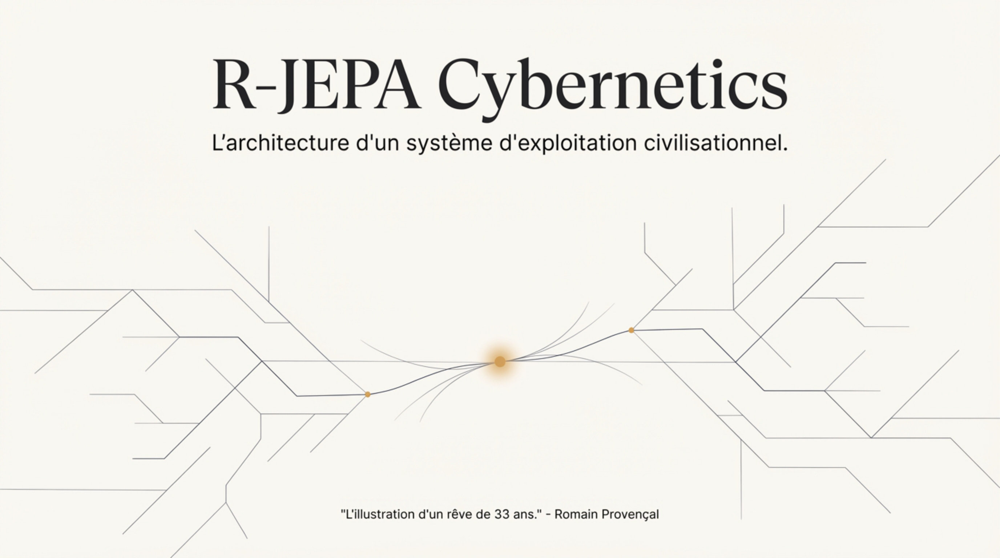
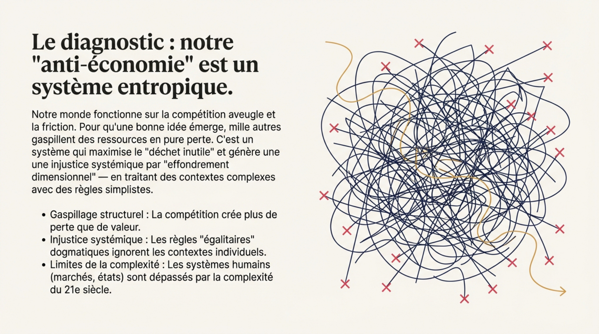
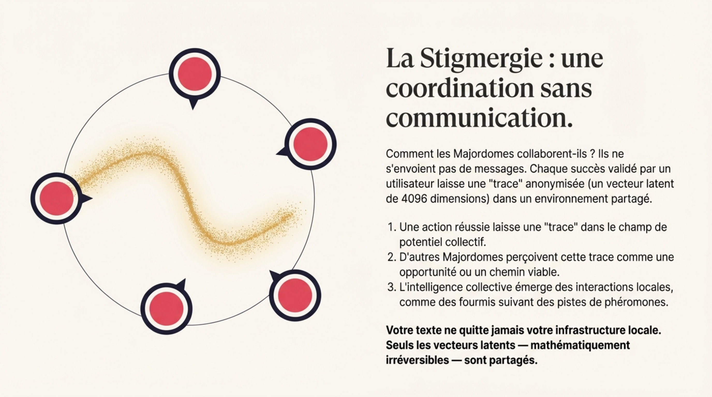
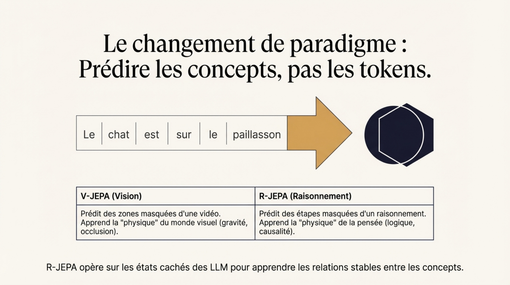
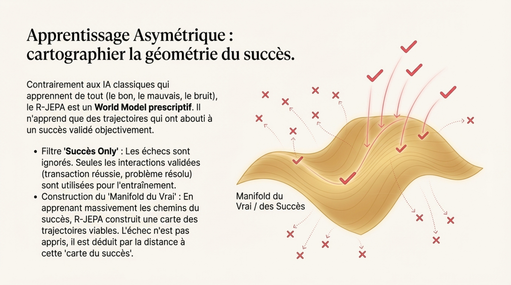
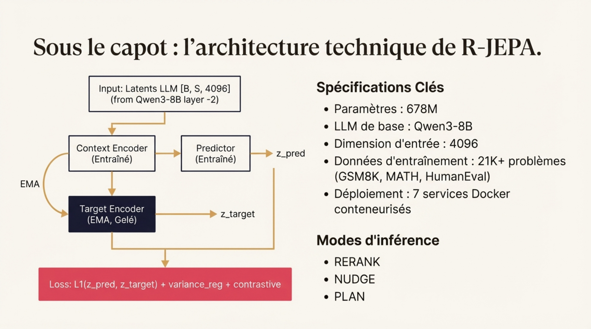
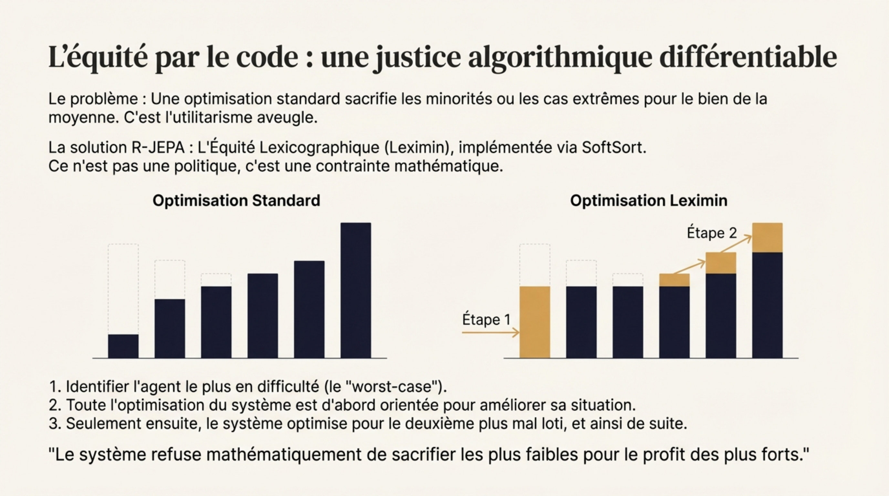
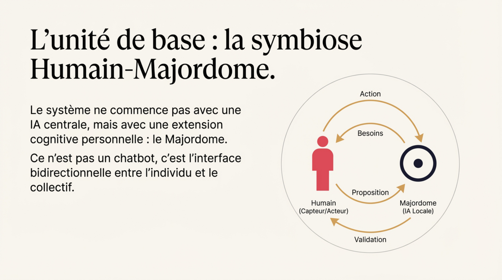
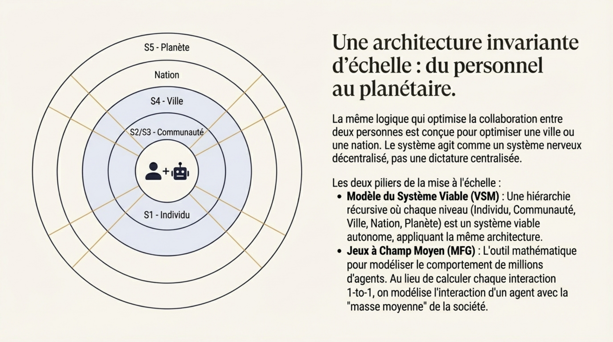
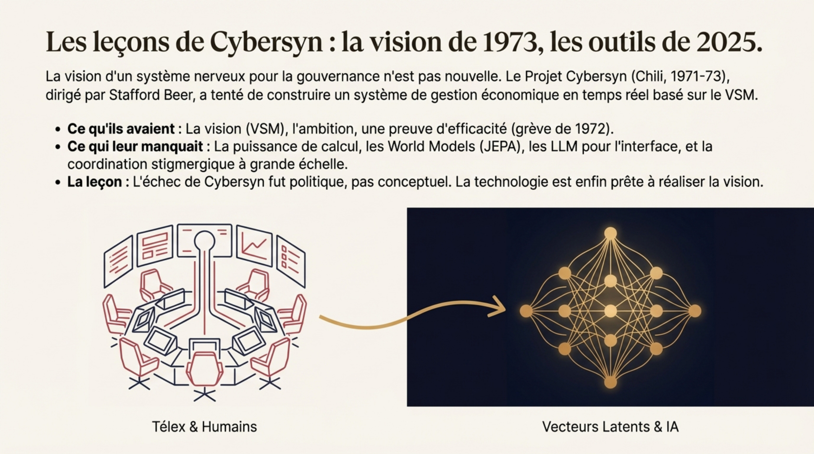

<!DOCTYPE html>
<html lang="en">
<head>
    <meta charset="UTF-8">
    <meta name="viewport" content="width=device-width, initial-scale=1.0">
    <title>R-JEPA Cybernetics - Research Paper</title>

    <!-- MathJax for LaTeX rendering -->
    <script src="https://polyfill.io/v3/polyfill.min.js?features=es6"></script>
    <script id="MathJax-script" async src="https://cdn.jsdelivr.net/npm/mathjax@3/es5/tex-mml-chtml.js"></script>
    <script>
        MathJax = {
            tex: {
                inlineMath: [['$', '$'], ['\\(', '\\)']],
                displayMath: [['$$', '$$'], ['\\[', '\\]']],
                processEscapes: true
            },
            options: {
                skipHtmlTags: ['script', 'noscript', 'style', 'textarea', 'pre']
            }
        };
    </script>

    <!-- html2pdf.js for PDF generation -->
    <script src="https://cdnjs.cloudflare.com/ajax/libs/html2pdf.js/0.10.1/html2pdf.bundle.min.js"></script>

    <style>
        /* ═══════════════════════════════════════════════════════════════════
           Academic Paper Stylesheet
           ═══════════════════════════════════════════════════════════════════ */

        :root {
            --font-serif: 'Times New Roman', 'Liberation Serif', Georgia, serif;
            --font-sans: 'Helvetica Neue', Arial, sans-serif;
            --font-mono: 'Courier New', monospace;
            --text-color: #1a1a1a;
            --link-color: #0066cc;
            --border-color: #cccccc;
            --bg-light: #f5f5f5;
        }

        * {
            box-sizing: border-box;
            margin: 0;
            padding: 0;
        }

        html {
            font-size: 11pt;
        }

        body {
            font-family: var(--font-serif);
            line-height: 1.6;
            color: var(--text-color);
            background: white;
            max-width: 210mm;
            margin: 0 auto;
            padding: 20mm 25mm;
        }

        /* Header Controls (hidden in PDF) */
        .controls {
            position: fixed;
            top: 0;
            left: 0;
            right: 0;
            background: #1a1a2e;
            color: white;
            padding: 15px 25mm;
            display: flex;
            justify-content: space-between;
            align-items: center;
            z-index: 1000;
            box-shadow: 0 2px 10px rgba(0,0,0,0.3);
        }

        .controls h1 {
            font-size: 0.75rem;
            font-family: var(--font-sans);
        }

        .controls button {
            background: linear-gradient(135deg, #f5a623, #f59e0b);
            color: #1a1a1a;
            border: none;
            padding: 10px 24px;
            font-size: 0.75rem;
            font-weight: 600;
            border-radius: 6px;
            cursor: pointer;
            transition: transform 0.2s, box-shadow 0.2s;
        }

        .controls button:hover {
            transform: translateY(-2px);
            box-shadow: 0 4px 15px rgba(245, 166, 35, 0.4);
        }

        .controls button:disabled {
            opacity: 0.6;
            cursor: not-allowed;
            transform: none;
        }

        .controls .btn-download {
            background: linear-gradient(135deg, #22c55e, #16a34a);
            color: white;
            text-decoration: none;
            padding: 10px 24px;
            font-size: 0.75rem;
            font-weight: 600;
            border-radius: 6px;
            transition: transform 0.2s, box-shadow 0.2s;
            display: inline-block;
        }

        .controls .btn-download:hover {
            transform: translateY(-2px);
            box-shadow: 0 4px 15px rgba(34, 197, 94, 0.4);
        }

        /* Paper content with top margin for fixed header */
        .paper {
            margin-top: 60px;
        }

        /* Title Page */
        .title-page {
            text-align: center;
            margin-bottom: 40px;
            page-break-after: always;
        }

        .paper-title {
            font-size: 1.6rem;
            font-weight: bold;
            margin-bottom: 20px;
            line-height: 1.3;
        }

        .paper-subtitle {
            font-size: 0.75rem;
            font-style: italic;
            color: #555;
            margin-bottom: 30px;
        }

        .authors {
            font-size: 0.75rem;
            margin-bottom: 10px;
        }

        .affiliation {
            font-size: 0.75rem;
            color: #666;
            margin-bottom: 5px;
        }

        .date {
            font-size: 0.75rem;
            color: #666;
            margin-top: 20px;
        }

        /* Abstract */
        .abstract {
            background: var(--bg-light);
            padding: 20px;
            margin: 30px 0;
            border-left: 4px solid #333;
        }

        .abstract h2 {
            font-size: 0.75rem;
            margin-bottom: 10px;
        }

        .abstract p {
            font-size: 0.75rem;
            text-align: justify;
        }

        .keywords {
            margin-top: 15px;
            font-size: 0.75rem;
        }

        .keywords strong {
            color: #333;
        }

        /* Sections */
        h2 {
            font-size: 1.3rem;
            margin-top: 30px;
            margin-bottom: 15px;
            border-bottom: 1px solid var(--border-color);
            padding-bottom: 5px;
        }

        h3 {
            font-size: 0.75rem;
            margin-top: 20px;
            margin-bottom: 10px;
        }

        h4 {
            font-size: 0.75rem;
            margin-top: 15px;
            margin-bottom: 8px;
            font-style: italic;
        }

        p {
            text-align: justify;
            margin-bottom: 12px;
            text-indent: 1.5em;
        }

        p:first-of-type,
        h2 + p,
        h3 + p,
        h4 + p {
            text-indent: 0;
        }

        /* Lists */
        ul, ol {
            margin: 12px 0 12px 2em;
        }

        li {
            margin-bottom: 6px;
        }

        /* Figures */
        figure {
            margin: 20px 0;
            text-align: center;
            page-break-inside: avoid;
        }

        figure img {
            max-width: 100%;
            height: auto;
            border: 1px solid var(--border-color);
        }

        figcaption {
            font-size: 0.75rem;
            color: #555;
            margin-top: 8px;
            font-style: italic;
        }

        /* Tables */
        table {
            width: 100%;
            border-collapse: collapse;
            margin: 20px 0;
            font-size: 0.75rem;
        }

        th, td {
            border: 1px solid var(--border-color);
            padding: 8px 12px;
            text-align: left;
        }

        th {
            background: var(--bg-light);
            font-weight: bold;
        }

        caption {
            font-size: 0.75rem;
            font-style: italic;
            margin-bottom: 8px;
            text-align: left;
        }

        /* Equations */
        .equation {
            margin: 20px 0;
            text-align: center;
        }

        .equation-number {
            float: right;
            margin-right: 10px;
        }

        /* Code blocks */
        pre, code {
            font-family: var(--font-mono);
            font-size: 0.75rem;
            background: var(--bg-light);
        }

        pre {
            padding: 15px;
            overflow-x: auto;
            margin: 15px 0;
            border: 1px solid var(--border-color);
        }

        code {
            padding: 2px 4px;
        }

        /* Blockquotes */
        blockquote {
            margin: 15px 0;
            padding: 10px 20px;
            border-left: 3px solid #333;
            background: var(--bg-light);
            font-style: italic;
        }

        /* Definition lists */
        dl {
            margin: 15px 0;
        }

        dt {
            font-weight: bold;
            margin-top: 10px;
        }

        dd {
            margin-left: 2em;
            margin-bottom: 5px;
        }

        /* References */
        .references {
            font-size: 0.75rem;
        }

        .references ol {
            margin-left: 0;
            padding-left: 2em;
        }

        .references li {
            margin-bottom: 8px;
            text-indent: -2em;
            padding-left: 2em;
        }

        /* Footnotes */
        .footnote {
            font-size: 0.75rem;
            color: #666;
        }

        /* Page breaks */
        .page-break {
            page-break-after: always;
        }

        /* Print styles - optimized for PDF generation via Ctrl+P */
        @media print {
            .controls, .loading-overlay {
                display: none !important;
            }

            body {
                background: white;
                padding: 0;
                margin: 0;
                max-width: none;
            }

            .paper {
                margin: 0;
                padding: 15mm 20mm;
            }

            .title-page {
                page-break-after: always;
            }

            h2 {
                page-break-after: avoid;
                page-break-before: auto;
            }

            h3 {
                page-break-after: avoid;
            }

            p {
                orphans: 3;
                widows: 3;
            }

            figure, table, blockquote, pre {
                page-break-inside: avoid;
            }

            section {
                page-break-before: auto;
                page-break-inside: auto;
            }

            .abstract {
                page-break-after: always;
            }

            nav {
                page-break-after: always;
            }

            a {
                text-decoration: none;
                color: inherit;
            }

            a[href]:after {
                content: none;
            }

            /* ═══════════════════════════════════════════════════════════════════
               Smart Page Breaks for PDF Generation
               ═══════════════════════════════════════════════════════════════════ */

            /* Title page - centered and full page */
            .title-page {
                min-height: 90vh;
                display: flex;
                flex-direction: column;
                justify-content: center;
                page-break-after: always;
            }

            /* Abstract gets its own page */
            .abstract {
                page-break-before: always;
                page-break-after: always;
            }

            /* TOC gets its own page */
            nav {
                page-break-before: always;
                page-break-after: always;
            }

            /* Each major section starts on a new page */
            article > section {
                page-break-before: always;
            }

            /* But not the first section after nav */
            nav + section {
                page-break-before: auto;
            }

            /* Section headers - don't orphan */
            h2 {
                page-break-after: avoid;
                margin-top: 0;
            }

            h3 {
                page-break-after: avoid;
            }

            /* Indivisible blocks */
            figure {
                page-break-inside: avoid;
                max-height: 45vh;
            }

            figure img {
                max-height: 40vh;
                width: auto;
            }

            table {
                page-break-inside: avoid;
            }

            blockquote {
                page-break-inside: avoid;
            }

            pre {
                page-break-inside: avoid;
                max-height: 30vh;
                overflow: hidden;
            }

            ul, ol {
                page-break-inside: avoid;
            }

            /* Orphans and widows */
            p {
                orphans: 3;
                widows: 3;
            }

            li {
                page-break-inside: avoid;
            }

            /* References section */
            .references {
                page-break-before: always;
            }

            /* Footer - on last page */
            footer {
                page-break-before: auto;
                margin-top: 30px;
            }
        }

        /* Screen preview - show page separations */
        @media screen {
            article > section {
                border-top: 2px dashed #ddd;
                padding-top: 20px;
                margin-top: 30px;
            }

            article > section:first-of-type {
                border-top: none;
            }
        }

        /* Loading overlay */
        .loading-overlay {
            display: none;
            position: fixed;
            top: 0;
            left: 0;
            right: 0;
            bottom: 0;
            background: rgba(0, 0, 0, 0.8);
            z-index: 2000;
            justify-content: center;
            align-items: center;
            flex-direction: column;
            color: white;
        }

        .loading-overlay.active {
            display: flex;
        }

        .loading-spinner {
            width: 50px;
            height: 50px;
            border: 4px solid rgba(255, 255, 255, 0.3);
            border-top-color: #f5a623;
            border-radius: 50%;
            animation: spin 1s linear infinite;
            margin-bottom: 20px;
        }

        @keyframes spin {
            to { transform: rotate(360deg); }
        }

        .loading-text {
            font-family: var(--font-sans);
            font-size: 0.75rem;
        }

        </style>
</head>
<body>
    <!-- Controls Header -->
    <div class="controls">
        <h1>📄 R-JEPA Cybernetics — Research Paper</h1>
        <div style="display: flex; align-items: center; gap: 15px;">
            <div style="display: flex; gap: 5px;">
                <a href="paper.html" style="padding: 5px 10px; background: #333; color: #fff; border-radius: 4px; text-decoration: none;">FR</a>
                <a href="paper-en.html" style="padding: 5px 10px; background: #f5a623; color: #1a1a2e; border-radius: 4px; text-decoration: none; font-weight: 600;">EN</a>
            </div>
            <a href="assets/docs/R-JEPA_Cybernetics_Paper.pdf" download class="btn-download">
                ⬇️ Download PDF
            </a>
            <button id="print-btn" onclick="window.print()" style="margin-left: 10px; background: #666;">
                🖨️ Print
            </button>
        </div>
    </div>

    <!-- Loading Overlay -->
    <div class="loading-overlay" id="loading">
        <div class="loading-spinner"></div>
        <div class="loading-text">Generating PDF...</div>
    </div>

    <!-- Paper Content -->
    <article class="paper" id="paper-content">

        <!-- Page 1: Title -->
        <header>
            <h1 class="paper-title">
                R-JEPA Cybernetics:<br>
                Architecture of a Planetary Nervous System<br>
                for Civilizational Resilience
            </h1>
            <p class="paper-subtitle">
                Socio-Technical Governance through Latent Predictive Architectures<br>
                and Lexicographic Equity
            </p>
            <p class="authors">Romain Provençal</p>
            <p class="affiliation">Teleadmin</p>
            <p class="affiliation">contact@teleadmin.net</p>
            <p class="date">December 2025 — Research Paper v1.0</p>
        </header><!-- Page: Abstract -->
        <section class="abstract">
            <h2>Abstract</h2>
            <p>
                This paper presents R-JEPA Cybernetics, a comprehensive governance architecture
                designed to replace the current anti-economy — based on entropic competition
                generating waste — with a negentropic coordination cybernetics.
                By combining Joint Embedding Predictive Architectures (JEPA), Mean Field Games
                (MFG), and differentiable lexicographic optimization (SoftSort), we propose a
                theoretical and technical framework for governance by feedback rather than dogma.
                The system relies on a Human-Majordomo symbiosis where personal AI assistants
                coordinate collective resources via stigmergy, without compromising privacy.
                Lexicographic equity, encoded directly in the model's loss function, mathematically
                guarantees that no minority will be sacrificed for the benefit of the majority.
            </p>
            <p class="keywords">
                <strong>Keywords:</strong> R-JEPA, Cybernetics, Stigmergy, World Model,
                Lexicographic Equity, Mean Field Games, VSM, Algorithmic Governance,
                Asymmetric Learning, Negentropy
            </p>
        </section><!-- Page: Table of Contents -->
        <nav>
            <h2>Table of Contents</h2>
            <ol>
                <li>Introduction: The Crisis and Cybernetic Renaissance</li>
                <li>Theoretical Foundations
                    <ol>
                        <li>Anti-Economy: Diagnosis of an Entropic System</li>
                        <li>The Negentropic Alternative</li>
                        <li>Stigmergy as Coordination Mechanism</li>
                    </ol>
                </li>
                <li>Architecture R-JEPA
                    <ol>
                        <li>From Descriptive to Prescriptive</li>
                        <li>The Manifold of Truth</li>
                        <li>Technical Specifications</li>
                        <li>Inference Modes</li>
                    </ol>
                </li>
                <li>Mathematical Formalism
                    <ol>
                        <li>Asymmetric Learning</li>
                        <li>Dual-Encoder EMA Architecture</li>
                        <li>Mean Field Games (MFG)</li>
                        <li>Lexicographic Equity (SoftSort)</li>
                    </ol>
                </li>
                <li>Human-Majordomo Symbiosis
                    <ol>
                        <li>The Functional Trinity</li>
                        <li>Feedback Loop</li>
                        <li>Validation Types</li>
                        <li>Bicameral Architecture</li>
                        <li>The Trace Object</li>
                        <li>The Δ Vector (Reasoning GPS)</li>
                    </ol>
                </li>
                <li>Scale Invariance and VSM Model</li>
                <li>The Cybernetic Social Contract</li>
                <li>Historical Precedent: Cybersyn (1971-1973)</li>
                <li>Implementation and Deployment</li>
                <li>Identity Layer & Trace Economy</li>
                <li>Conclusion</li>
                <li>References</li>
            </ol>
        </nav><!-- Page+: Content (flexible pages) -->
        <!-- Section 1: Introduction -->
        <section>
            <h2>1. Introduction: The Crisis and Cybernetic Renaissance</h2>

            <p>
                The current artificial intelligence landscape is dominated by the paradigm of Large
                Language Models (LLMs), which operate on an autoregressive probabilistic principle:
                predicting the next element of a sequence (token) based on previous ones.
                While this approach has enabled remarkable feats in syntactic and semantic language
                manipulation, it encounters major structural limitations when applied to the governance
                of real physical or social systems.
            </p>

            <p>
                Autoregressive models suffer from exponential error accumulation when generating
                long action sequences, a critical flaw for strategic planning. Moreover, they often
                operate in raw observation space (pixels or tokens), which is inherently noisy and
                rich in irrelevant details for high-level decision making.
            </p>

            <p>
                To address these architectural deficits, contemporary research is returning theoretically
                to <strong>cybernetics</strong>, a discipline founded by Norbert Wiener in the mid-20th
                century [1]. Cybernetics, defined as the study of control and communication in animals
                and machines, provides the conceptual primitives needed to design systems capable of
                autonomous regulation.
            </p>

            <p>
                This paper presents R-JEPA Cybernetics, the technological realization of
                <strong>homeostatic governance</strong> — a self-regulating system that maintains
                viable conditions for all its members, like a body maintains its internal temperature.
            </p>

            <figure>
                
                <figcaption>Figure 1: R-JEPA Cybernetics — "The crystallization of a 33-year dream"</figcaption>
            </figure>
        </section>

        <!-- Section 2: Theoretical Foundations -->
        <section>
            <h2>2. Theoretical Foundations</h2>

            <h3>2.1 Anti-Economy: Diagnosis of an Entropic System</h3>

            <p>
                Our current economic system relies on blind competition. Sources describe it as
                an "anti-economy" — a term that deserves explanation. The principle: for one
                startup to succeed, a thousand others must fail. But those thousand companies
                consumed resources — capital, energy, human time, talent. It's a net loss,
                an immense <strong>structural waste</strong>.
            </p>

            <p>
                This system is called "entropic" — a physics term meaning it naturally tends
                toward disorder, chaos, energy dispersion.
            </p>

            <p>Competition generates several types of destructive friction:</p>
            <ul>
                <li><strong>Effort duplication</strong>: A hundred teams work on the same problem without sharing their discoveries</li>
                <li><strong>Industrial secrecy</strong>: Innovations are hidden to preserve a temporary competitive advantage</li>
                <li><strong>Manipulative marketing</strong>: Massive resources invested not to create value, but to capture attention</li>
                <li><strong>Planned obsolescence</strong>: Deliberate value destruction to force renewal</li>
                <li><strong>Negative externalities</strong>: Real costs (pollution, health, social) externalized onto the collective</li>
            </ul>

            <figure>
                
                <figcaption>Figure 2: The diagnosis — An entropic system tending toward chaos</figcaption>
            </figure>

            <h3>2.2 The Negentropic Alternative</h3>

            <p>
                <strong>Negentropy</strong> (or negative entropy) is the opposite of entropy:
                it's the tendency to create order, structure, organization. This is what life
                itself does — it organizes matter against the natural tendency toward disorder.
            </p>

            <p>
                A negentropic system is one that, instead of wasting energy on competitive friction,
                immediately capitalizes on each discovery for collective benefit.
                R-JEPA Cybernetics proposes two complementary mechanisms:
            </p>

            <dl>
                <dt>Stigmergy</dt>
                <dd>When an agent finds a working solution, it leaves a "success trace" in the
                shared environment. Other agents can follow these traces without having to
                reinvent the wheel.</dd>

                <dt>Asymmetric Learning</dt>
                <dd>The system only learns from validated successes. Failures are not propagated,
                they don't leave negative traces. This creates a "map of viable paths" that
                continuously enriches itself.</dd>
            </dl>

            <blockquote>
                "We no longer spend human effort fighting, but capitalizing.
                One person's effort instantly benefits everyone."
            </blockquote>

            <h3>2.3 Stigmergy as Coordination Mechanism</h3>

            <p>
                Stigmergy is a form of indirect and asynchronous coordination, theorized by
                Pierre-Paul Grassé to describe termite behavior, then generalized by
                Francis Heylighen [2]. Rather than communicating directly, agents leave
                traces in a shared environment.
            </p>

            <p>
                In nature, ants don't talk to each other — they follow pheromone trails.
                An ant finds a food source and on the way back, leaves a trace. Other ants
                stumble upon this trace, follow it and reinforce it with their own pheromone.
                Very quickly, a hyper-efficient highway forms — without any direct
                communication or leader.
            </p>

            <p>
                This property is crucial: stigmergy is <strong>intrinsically scale-invariant</strong>.
                It requires neither central planning, nor simultaneous presence of agents,
                nor even mutual awareness of each other's existence.
            </p>

            <figure>
                
                <figcaption>Figure 3: Stigmergy — Coordination without direct communication</figcaption>
            </figure>
        </section>

        

        <!-- Section 3: Architecture R-JEPA -->
        <section>
            <h2>3. R-JEPA Architecture</h2>

            <h3>3.1 From Descriptive to Prescriptive</h3>

            <p>
                R-JEPA (Reasoning Joint Embedding Predictive Architecture) is a world model
                designed for textual reasoning. Its fundamental principle is a direct transposition
                of the V-JEPA (Vision-JEPA) innovation from Meta AI [3]. Where V-JEPA learns
                to understand the physical world by predicting masked image features rather than
                raw pixels (<em>"predict features, not pixels"</em>), R-JEPA learns to master
                logic by predicting masked reasoning concepts rather than specific words
                (<em>"predict concepts, not tokens"</em>).
            </p>

            <table>
                <caption>Table 1: V-JEPA / R-JEPA Comparison</caption>
                <thead>
                    <tr>
                        <th>V-JEPA (Vision)</th>
                        <th>R-JEPA (Text)</th>
                    </tr>
                </thead>
                <tbody>
                    <tr>
                        <td>Predicts masked patches from a video sequence</td>
                        <td>Predicts masked reasoning steps</td>
                    </tr>
                    <tr>
                        <td>Learns "visual physics" (gravity, occlusion)</td>
                        <td>Learns "reasoning physics" (logical flow, causality)</td>
                    </tr>
                    <tr>
                        <td>Operates on latent image features</td>
                        <td>Operates on LLM hidden states (latent vectors)</td>
                    </tr>
                </tbody>
            </table>

            <p>
                The fundamental distinction is not "World Model vs No World Model", but
                <strong>Descriptive vs Prescriptive World Model</strong>:
            </p>

            <ul>
                <li><strong>Descriptive Model (Classic)</strong>: Learns "what exists". It maps
                the entire territory: safe routes, but also swamps and dead ends.
                It can generate an error because it learned what an error looks like.</li>
                <li><strong>Prescriptive Model (R-JEPA)</strong>: Learns "what works". It only maps
                viable routes. Failure is not "learned", it's defined by absence.</li>
            </ul>

            <figure>
                
                <figcaption>Figure 4: Paradigm shift — Concepts vs Tokens</figcaption>
            </figure>

            <h3>3.2 The Manifold of Truth</h3>

            <p>
                By massively learning success trajectories, R-JEPA builds a dense mathematical
                structure called the <strong>"Manifold of Truth"</strong>. In this high-dimensional
                latent space, successes are not isolated points — they form a continuous surface
                (a manifold).
            </p>

            <p>
                Any point that moves away from this surface (an inconsistency, a hallucination,
                a logical error) generates a "tension" or high distance in the latent space,
                measured by the <strong>JEPA Loss</strong>.
            </p>

            <blockquote>
                "The system doesn't need to see a failure to know it's wrong.
                It only needs to see that the trajectory leaves the geometry of successes it has mapped."
            </blockquote>

            <p>
                <strong>Minefield map analogy:</strong> A Descriptive World Model maps the location
                of every mine AND every safe path. R-JEPA only maps safe paths. But the result is
                the same for navigation: if you're on R-JEPA's map, you're safe. If you leave the
                mapped zone, you implicitly know you're in danger — even if the model has never
                "seen" a mine explode.
            </p>

            <figure>
                
                <figcaption>Figure 5: The Manifold of Truth — High-dimensional success geometry</figcaption>
            </figure>

            <h3>3.3 Technical Specifications</h3>

            <p>
                The technical architecture of the R-JEPA model (678M parameters) is designed for
                latent space prediction:
            </p>

            <table>
                <caption>Table 2: R-JEPA Model Specifications</caption>
                <thead>
                    <tr>
                        <th>Component</th>
                        <th>Specification</th>
                    </tr>
                </thead>
                <tbody>
                    <tr>
                        <td>Total Parameters</td>
                        <td>678M</td>
                    </tr>
                    <tr>
                        <td>Latent Dimension</td>
                        <td>4096 (layer -2 of Qwen3-8B)</td>
                    </tr>
                    <tr>
                        <td>Context Encoder</td>
                        <td>12 layers, 1024-dim, 16 attention heads</td>
                    </tr>
                    <tr>
                        <td>Target Encoder</td>
                        <td>EMA copy (τ = 0.996 → 0.9999), frozen</td>
                    </tr>
                    <tr>
                        <td>Predictor</td>
                        <td>8 transformer layers</td>
                    </tr>
                    <tr>
                        <td>Masking Ratio</td>
                        <td>Contiguous, 30-70% of steps</td>
                    </tr>
                    <tr>
                        <td>Datasets</td>
                        <td>GSM8K, MATH, HumanEval (21,456 problems)</td>
                    </tr>
                </tbody>
            </table>

            <h3>3.4 Inference Modes</h3>

            <p>The model can be used via three main inference modes:</p>

            <dl>
                <dt>RERANK (Production)</dt>
                <dd>Generates K=4 candidate reasoning chains, computes JEPA-loss for each,
                selects the one with lowest loss. Combined score:
                $\text{score} = \alpha \times \log p + \beta \times (-\mathcal{L}_{\text{JEPA}})$</dd>

                <dt>NUDGE (Real-time guidance)</dt>
                <dd>Guides LLM generation token by token by projecting predicted latents
                to vocabulary space via a learned MLP:
                $\text{logits}_{\text{final}} = \text{logits}_{\text{LLM}} + \alpha \times \text{guidance\_bias}$</dd>

                <dt>PLAN (Completion)</dt>
                <dd>Predicts latents for missing reasoning steps. Allows the system
                to "dream" complete logical trajectories.</dd>
            </dl>

            <figure>
                
                <figcaption>Figure 6: Technical architecture — Dual-encoder with EMA</figcaption>
            </figure>
        </section>

        

        <!-- Section 4: Mathematical Formalism -->
        <section>
            <h2>4. Mathematical Formalism</h2>

            <h3>4.1 Asymmetric Learning</h3>

            <p>
                Let $T$ be the set of reasoning trajectories and $V: T \rightarrow \{0, 1\}$
                an objective validation function. The training set is restricted to
                validated successes:
            </p>

            <div class="equation">
                $$T^+ = \{\tau \in T \mid V(\tau) = 1\}$$
                <span class="equation-number">(1)</span>
            </div>

            <p>The R-JEPA loss function is defined on this set:</p>

            <div class="equation">
                $$\mathcal{L}_{\text{RJEPA}}(\theta) = \mathbb{E}_{\tau \in T^+} \left[ \sum_t \| \text{Pred}_\theta(s_t, a_t) - \text{Enc}(s_{t+1}) \|^2 \right]$$
                <span class="equation-number">(2)</span>
            </div>

            <p>
                where $\text{Pred}_\theta$ is the predictor parameterized by $\theta$, $s_t$ the latent state
                at time $t$, and $a_t$ the action (or transition) between states.
            </p>

            <h3>4.2 Dual-Encoder EMA Architecture</h3>

            <p>The architecture consists of several modules:</p>

            <p><strong>Context Encoder:</strong></p>
            <div class="equation">
                $$s_t = \text{Enc}_\theta(x_t) \in \mathbb{R}^d$$
                <span class="equation-number">(3)</span>
            </div>

            <p><strong>Recurrent Core (state memory):</strong></p>
            <div class="equation">
                $$h_t = f(h_{t-1}, s_t)$$
                <span class="equation-number">(4)</span>
            </div>

            <p><strong>Latent Predictor ("dream" capability):</strong></p>
            <div class="equation">
                $$\hat{s}_{t+k} = \text{Pred}_\phi(h_t, a_{t:t+k})$$
                <span class="equation-number">(5)</span>
            </div>

            <p><strong>Complete loss function:</strong></p>
            <div class="equation">
                $$\mathcal{L} = \mathcal{L}_1(z_{\text{pred}}, z_{\text{target}}) + \lambda_{\text{var}} \cdot \mathcal{L}_{\text{variance}} + \lambda_{\text{cont}} \cdot \mathcal{L}_{\text{contrastive}}$$
                <span class="equation-number">(6)</span>
            </div>

            <p>
                with $\lambda_{\text{var}} = 0.01$, $\lambda_{\text{cont}} = 0.1$, and temperature
                $\tau = 0.07$ for the contrastive term (InfoNCE).
            </p>

            <p><strong>Isometric regularization:</strong></p>
            <div class="equation">
                $$\mathcal{L}_{\text{iso}} = \| J_f(x)^\top J_f(x) - cI \|$$
                <span class="equation-number">(7)</span>
            </div>

            <p>
                where $J_f$ is the encoder's Jacobian, ensuring that distances are
                preserved in latent space.
            </p>

            <h3>4.3 Mean Field Games (MFG)</h3>

            <p>
                To handle the complexity of millions of agents, the system uses Mean Field
                Game theory [4]. Instead of modeling each individual interaction,
                we model the interaction of a representative agent with the statistical
                distribution of the population.
            </p>

            <p>The coupled HJB-Fokker-Planck equations are:</p>

            <p><strong>Hamilton-Jacobi-Bellman equation (backward):</strong></p>
            <div class="equation">
                $$-\partial_t u - \nu \Delta u + H(x, \nabla u) = F(x, m)$$
                <span class="equation-number">(8)</span>
            </div>

            <p><strong>Fokker-Planck equation (forward):</strong></p>
            <div class="equation">
                $$\partial_t m - \nu \Delta m - \text{div}(m \nabla_p H(x, \nabla u)) = 0$$
                <span class="equation-number">(9)</span>
            </div>

            <p>
                where $u$ is the agent's value function, $m$ the population distribution,
                $H$ the Hamiltonian of the control problem, and $F$ the coupling term.
            </p>

            <h3>4.4 Lexicographic Equity (SoftSort)</h3>

            <p>
                Lexicographic equity (Leximin), inspired by John Rawls' theory of justice [5],
                imposes the following rule:
            </p>

            <ol>
                <li>Maximize the utility of the most disadvantaged participant</li>
                <li>Under this constraint, maximize the utility of the second most disadvantaged</li>
                <li>And so on until complete allocation</li>
            </ol>

            <p>
                To make this optimization differentiable and compatible with Deep Learning,
                we use SoftSort [6], a differentiable sorting algorithm based on projection
                onto the permutahedron.
            </p>

            <p><strong>Lexicographic equity loss function:</strong></p>
            <div class="equation">
                $$\mathcal{L}_{\text{Lexi}}(\theta) = \sum_{k=1}^{N} w_k \cdot \text{SoftSort}_k(R(\theta))$$
                <span class="equation-number">(10)</span>
            </div>

            <p>
                where $R(\theta)$ is the vector of allocated rewards/resources, $\text{SoftSort}_k$
                extracts the soft value of the $k$-th smallest element, and $w_k$ are strictly
                decreasing weights ($w_1 \gg w_2 \gg \cdots \gg w_N$).
            </p>

            <blockquote>
                "Fairness by Design: equity is not an external constraint, but an internal
                structural objective of the model."
            </blockquote>

            <figure>
                
                <figcaption>Figure 7: Lexicographic Equity — "Raise the floor" before "raise the ceiling"</figcaption>
            </figure>
        </section>

        

        <!-- Section 5: Human-Majordomo Symbiosis -->
        <section>
            <h2>5. Human-Majordomo Symbiosis</h2>

            <p>
                The base unit of the R-JEPA Cybernetics system is the "AI Majordomo". It's not
                a simple chatbot, but a true cognitive extension designed to form a symbiotic
                couple with its human user.
            </p>

            <h3>5.1 The Functional Trinity</h3>

            <table>
                <caption>Table 3: The Three Components of Symbiosis</caption>
                <thead>
                    <tr>
                        <th>Component</th>
                        <th>Function</th>
                        <th>Role</th>
                    </tr>
                </thead>
                <tbody>
                    <tr>
                        <td><strong>LLM</strong></td>
                        <td>Language</td>
                        <td>Conversational interface, understands nuanced context, formulates clear proposals</td>
                    </tr>
                    <tr>
                        <td><strong>R-JEPA</strong></td>
                        <td>Meaning</td>
                        <td>Prescriptive compass, simulates trajectories in the Manifold of Truth</td>
                    </tr>
                    <tr>
                        <td><strong>Human</strong></td>
                        <td>Will</td>
                        <td>Final sensor and actor, provides needs, resources, decision to act</td>
                    </tr>
                </tbody>
            </table>

            <h3>5.2 Main Feedback Loop</h3>

            <ol>
                <li><strong>Acquisition</strong>: The human expresses a need. The Majordomo, via its LLM module, contextualizes this request.</li>
                <li><strong>Proposal</strong>: The personal R-JEPA simulates trajectories based on validated successes. The LLM translates the best trajectory into a clear proposal.</li>
                <li><strong>Action</strong>: The human, as final decision-maker, chooses whether to act or not.</li>
                <li><strong>Validation & Learning</strong>: The result is objectively evaluated. If successful, the trajectory is used to update the model.</li>
            </ol>

            <h3>5.3 Objective Validation Types</h3>

            <ul>
                <li><strong>Transactional</strong>: Payment made, contract signed</li>
                <li><strong>Reciprocity</strong>: Both parties confirm satisfaction</li>
                <li><strong>Outcome</strong>: Measurable result (energy bill decreases, code compiles)</li>
                <li><strong>Continuation</strong>: Collaboration continues over time</li>
            </ul>

            <p>
                <strong>Anti-gaming mechanisms</strong>: cross-validation between independent sources,
                delay before propagation, statistical anomaly detection, weighting by action cost.
            </p>

            <figure>
                
                <figcaption>Figure 8: Human-Majordomo feedback loop</figcaption>
            </figure>

            <h3>5.4 Bicameral Majordomo Architecture</h3>

            <p>
                Each Majordomo is a two-"brain" system with complementary components that collaborate
                to guide the user:
            </p>

            <table>
                <caption>Table 3b: The Two Cognitive Modules of the Majordomo</caption>
                <thead>
                    <tr>
                        <th>Module</th>
                        <th>Role</th>
                        <th>Function</th>
                    </tr>
                </thead>
                <tbody>
                    <tr>
                        <td><strong>The Speaker</strong> (LLM Student)</td>
                        <td>Human interface</td>
                        <td>Natural language, semantics, dialogue</td>
                    </tr>
                    <tr>
                        <td><strong>The Thinker</strong> (R-JEPA Teacher)</td>
                        <td>Logic / Strategy</td>
                        <td>Latent space, prediction, Manifold of Truth</td>
                    </tr>
                </tbody>
            </table>

            <p>
                The LLM "sees" the whole world (trained on all of Internet, including errors and dangers).
                R-JEPA only "sees" validated paths. The symbiosis: LLM describes, R-JEPA prescribes.
            </p>

            <h3>5.5 The Exchange Object: The Trace</h3>

            <p>
                When an agent succeeds in a validated action, it emits a <strong>Trace</strong> — the
                fundamental unit of exchange in the stigmergic system. JSON structure:
            </p>

            <pre><code>{
  "trace_id": "sha256:a1b2c3d4...",
  "context": {
    "embedding": [0.12, -0.34, ..., 0.98],  // z_t (4096-dim)
    "domain": "energy",
    "intent_hash": "sha256:..."
  },
  "action": {
    "code": "ACT_OPTIMIZE_LOAD",
    "outcome_embedding": [0.88, 0.04, ..., -0.21]  // z_success
  },
  "validation": {
    "type": "transactional",  // or "reciprocity", "outcome"
    "proof": "zk_snark_proof_base64",
    "validator_did": "did:rjepa:z6Mk..."
  },
  "privacy": {
    "reversibility_score": 0.0001  // must be < 0.001
  }
}</code></pre>

            <p>
                <strong>Critical property</strong>: The 4096-dim embeddings are mathematically
                irreversible — impossible to reconstruct the original text. Only the "direction"
                in latent space is captured, not the content.
            </p>

            <h3>5.6 The Δ Vector: Reasoning GPS</h3>

            <p>
                R-JEPA's key innovation is not saying "true/false" (binary), but providing
                a <strong>vector direction</strong>. When the LLM proposes an action, R-JEPA computes:
            </p>

            <div class="equation">
                $$\Delta = z_{\text{pred}} - z_{\text{current}}$$
                <span class="equation-number">(11)</span>
            </div>

            <p>
                where $z_{\text{pred}}$ is the latent state predicted by R-JEPA (where should we go?) and
                $z_{\text{current}}$ is the current encoded state. This Δ vector is then projected into
                vocabulary space via an MLP:
            </p>

            <div class="equation">
                $$\text{guidance\_bias} = \text{MLP}(\Delta) \in \mathbb{R}^{|\mathcal{V}|}$$
                <span class="equation-number">(12)</span>
            </div>

            <p>
                The LLM uses its pre-training to <strong>semantically interpret</strong> this
                direction. Concrete example:
            </p>

            <blockquote>
                <strong>Situation</strong>: The user wants to ask for a raise.<br>
                <strong>LLM generates</strong>: "I'll threaten to leave if I don't get +30%"<br>
                <strong>R-JEPA computes</strong>: Energy = 0.89 (HIGH → off the Manifold)<br>
                <strong>Memory finds</strong>: Similar validated trace = "Present achievements + ask for feedback"<br>
                <strong>Δ points</strong>: from "threat" toward "collaboration"<br>
                <strong>LLM interprets</strong>: "The gap suggests: replace confrontation with appreciation"<br>
                <strong>New generation</strong>: "I'll present my year's achievements and open a discussion about my salary evolution"
            </blockquote>

            <p>
                This is the system's <strong>"Vector GPS"</strong>:
            </p>

            <table>
                <thead>
                    <tr><th>Component</th><th>Role</th><th>GPS Analogy</th></tr>
                </thead>
                <tbody>
                    <tr><td>R-JEPA</td><td>Success coordinates</td><td>Destination</td></tr>
                    <tr><td>LLM</td><td>Terrain understanding</td><td>Map</td></tr>
                    <tr><td>Δ (delta)</td><td>Correction direction</td><td>Route</td></tr>
                    <tr><td>Memory</td><td>Contextual history</td><td>Real-time traffic</td></tr>
                    <tr><td>Stigmergy</td><td>Collective intelligence</td><td>Waze (reports)</td></tr>
                </tbody>
            </table>
        </section>

        <!-- Section 6: Invariance d'Échelle -->
        <section>
            <h2>6. Scale Invariance and VSM Model</h2>

            <p>
                L'architecture possède une propriété fondamentale : l'<strong>invariance d'échelle</strong>
                (Scale-Invariance). La même structure de base s'applique de manière récursive à tous
                les niveaux de l'organisation sociale.
            </p>

            <h3>6.1 Hierarchical Levels</h3>

            <table>
                <caption>Tableau 4 : Invariance d'échelle — du Majordome à la Planète</caption>
                <thead>
                    <tr>
                        <th>Level</th>
                        <th>Entity</th>
                        <th>Example</th>
                    </tr>
                </thead>
                <tbody>
                    <tr><td>L1</td><td>Individual</td><td>Personal Majordomo</td></tr>
                    <tr><td>L2</td><td>Community</td><td>Quartier, équipe, entreprise</td></tr>
                    <tr><td>L3</td><td>City</td><td>Réseau énergétique urbain</td></tr>
                    <tr><td>L4</td><td>Nation</td><td>Délibération démocratique</td></tr>
                    <tr><td>L5</td><td>Planet</td><td>Coordination climatique globale</td></tr>
                </tbody>
            </table>

            <h3>6.2 Viable System Model (VSM)</h3>

            <p>
                Le système est structuré selon le Modèle de Système Viable de Stafford Beer [7],
                une architecture éprouvée pour la gestion d'organisations complexes :
            </p>

            <dl>
                <dt>Système 1 — Opérations</dt>
                <dd>Les agents locaux (couples Humain-Majordome). Chacun gère ses besoins immédiats.</dd>

                <dt>Système 2 — Coordination</dt>
                <dd>Les protocoles de stigmergie. Communication latérale pair-à-pair.</dd>

                <dt>Système 3 — Optimisation</dt>
                <dd>L'agrégateur qui analyse le Champ de Potentiel Collectif.</dd>

                <dt>Système 4 — Intelligence</dt>
                <dd>Le R-JEPA Global qui modélise l'état du système et simule des scénarios.</dd>

                <dt>Système 5 — Politique</dt>
                <dd>Les objectifs de haut niveau : équité lexicographique, durabilité, résilience.</dd>
            </dl>

            <figure>
                
                <figcaption>Figure 9 : Architecture VSM invariante d'échelle</figcaption>
            </figure>
        </section>

        

        <!-- Section 7: Contrat Social -->
        <section>
            <h2>7. The Cybernetic Social Contract</h2>

            <h3>7.1 Simulation Module</h3>

            <p>
                Pour que les citoyens acceptent l'optimisation, ils doivent pouvoir "voir le futur"
                qu'elle propose. Le mode PLAN de R-JEPA permet exactement cela.
            </p>

            <p>
                <strong>Pour le citoyen :</strong> "Si je change de métier pour devenir ébéniste,
                que se passe-t-il dans 3 ans ?" Le système projette les flux (revenus, satisfaction,
                demande locale) et montre une simulation basée sur des trajectoires validées ailleurs.
            </p>

            <p>
                <strong>Pour le collectif :</strong> On peut visualiser graphiquement comment une
                décision collective (une taxe carbone, un investissement d'infrastructure) va déplacer
                les flux de ressources. Les citoyens ne votent plus pour des promesses, mais pour
                des simulations validées.
            </p>

            <h3>7.2 "Flow Against Flow" Transition</h3>

            <p>Le système ne confisque pas le stock (capital passé), il régule le flux (production future) :</p>

            <ul>
                <li><strong>Le Capital comme "Batterie"</strong> : Les détenteurs de capitaux gardent leurs actifs — leur "batterie" de départ.</li>
                <li><strong>La Nouvelle Règle du Jeu</strong> : Ce qui change, c'est l'usage. Toute action doit être validée comme un "succès" (efficace ET non-destructrice) pour être apprise et propagée.</li>
                <li><strong>L'Échange</strong> : Le riche injecte son "vieux flux" (monnaie fiat) pour acheter des "nouveaux services" (santé, énergie, sécurité). Le système convertit ces ressources en actions optimisées et redistribue la valeur selon les règles d'équité.</li>
            </ul>

            <h3>7.3 The Vital Argument for Elites</h3>

            <p>
                La richesse n'a de valeur que dans un système stable. L'argument n'est pas moral,
                il est vital :
            </p>

            <ul>
                <li><strong>Sans R-JEPA</strong> : Le capital s'érode car le système actuel s'effondre sous l'entropie et le risque climatique/social.</li>
                <li><strong>Avec R-JEPA</strong> : Ils gardent leur statut, mais leur capital est investi dans un système négentropique. Ils échangent un pouvoir de "destruction arbitraire" contre une garantie de "survie luxueuse et stable".</li>
            </ul>

            <blockquote>
                « Gardez votre passé, mais jouez selon nos règles pour le futur. »
            </blockquote>

            <figure>
                
                <figcaption>Figure 10 : The Cybernetic Social Contract</figcaption>
            </figure>
        </section>

        <!-- Section 8: Cybersyn -->
        <section>
            <h2>8. Historical Precedent: Cybersyn (1971-1973)</h2>

            <p>
                Le projet Cybersyn, au Chili sous le gouvernement de Salvador Allende, constitue
                un précédent historique crucial [8]. Stafford Beer a tenté de gérer l'économie
                chilienne en temps réel avec la technologie de l'époque.
            </p>

            <h3>8.1 Cybersyn Architecture</h3>

            <ul>
                <li><strong>Réseau</strong> : 500 télex reliant les usines à Santiago</li>
                <li><strong>CYBERSTRIDE</strong> : Logiciel de détection d'anomalies statistiques</li>
                <li><strong>OPSROOM</strong> : Salle de contrôle futuriste (style "Star Trek")</li>
            </ul>

            <h3>8.2 The 1972 Strike Test</h3>

            <p>
                En octobre 1972, une grève massive des camionneurs, financée par la CIA, visait
                à paralyser l'économie chilienne. L'approvisionnement aurait dû s'effondrer.
            </p>

            <p>
                <strong>Résultat :</strong> Avec Cybersyn, en gérant en temps réel les quelques
                camions qui roulaient encore et les stocks disponibles, l'équipe de Beer a réussi
                à maintenir l'approvisionnement du pays. La grève a échoué.
            </p>

            <h3>8.3 The Political Failure</h3>

            <p>
                Le 11 septembre 1973, le coup d'État du général Pinochet met fin au projet.
                La salle de contrôle est détruite. L'échec n'est pas technique — il est politique.
            </p>

            <p><strong>Leçons pour R-JEPA Cybernetics :</strong></p>
            <ul>
                <li>La technologie seule est insuffisante si le contexte politique la détruit</li>
                <li>La décentralisation (stigmergie) est plus résiliente qu'un centre de contrôle unique</li>
                <li>Les interfaces simplifiées sont essentielles pour l'adoption</li>
            </ul>

            <figure>
                
                <figcaption>Figure 11 : De Cybersyn (1973) à R-JEPA (2025) — Les leçons de l'histoire</figcaption>
            </figure>
        </section>

        

        <!-- Section 9: Implémentation -->
        <section>
            <h2>9. Implementation and Deployment</h2>

            <h3>9.1 Available Editions</h3>

            <table>
                <caption>Tableau 5 : Éditions R-JEPA</caption>
                <thead>
                    <tr>
                        <th>Feature</th>
                        <th>Community Edition</th>
                        <th>Cloud API</th>
                    </tr>
                </thead>
                <tbody>
                    <tr>
                        <td>License</td>
                        <td>MIT (gratuit)</td>
                        <td>Pay-per-token</td>
                    </tr>
                    <tr>
                        <td>Hosting</td>
                        <td>Self-hosted (Docker)</td>
                        <td>OVHcloud Partner 🇫🇷</td>
                    </tr>
                    <tr>
                        <td>GPU Required</td>
                        <td>Yes</td>
                        <td>No</td>
                    </tr>
                    <tr>
                        <td>Modes d'inférence</td>
                        <td>RERANK, NUDGE, PLAN</td>
                        <td>RERANK, NUDGE, PLAN</td>
                    </tr>
                    <tr>
                        <td>Mémoire Associative</td>
                        <td>—</td>
                        <td>✓</td>
                    </tr>
                    <tr>
                        <td>ValidationGate</td>
                        <td>—</td>
                        <td>✓</td>
                    </tr>
                    <tr>
                        <td>Auto-scaling</td>
                        <td>—</td>
                        <td>✓</td>
                    </tr>
                </tbody>
            </table>

            <h3>9.2 Docker Infrastructure (7 Services)</h3>

            <ol>
                <li><code>student-llm</code> : Qwen3-8B (ou autre LLM compatible)</li>
                <li><code>rjepa-service</code> : Modèle R-JEPA 678M</li>
                <li><code>teacher-orch</code> : Orchestrateur d'entraînement</li>
                <li><code>data-pipeline</code> : Pipeline de données et validation</li>
                <li><code>prefect-server</code> : Orchestration des workflows</li>
                <li><code>ui-backend</code> : API REST</li>
                <li><code>ui-frontend</code> : Interface utilisateur</li>
            </ol>

            <h3>9.3 Experimental Protocols</h3>

            <p><strong>CityLearn v2</strong> : Benchmark pour la gestion de communautés énergétiques.
            Métriques : Peak Shaving, Coût total, Équité Distributive, Robustesse aux perturbations.</p>

            <p><strong>Polis</strong> : Plateforme de démocratie computationnelle.
            Métriques : Bridging Score (consensus entre groupes opposés), Convergence Time,
            Minority Voice Preservation.</p>

            <h3>9.4 Privacy-First Architecture</h3>

            <p>
                Avec R-JEPA Cloud, le texte ne quitte jamais l'infrastructure locale. Le processus :
            </p>
            <ol>
                <li>Extraction locale des vecteurs latents (4096-dim)</li>
                <li>Seuls ces vecteurs sont envoyés à l'API — ils agissent comme pointeurs</li>
                <li>Le texte reste dans la base de données locale</li>
                <li>L'API retourne des indices mémoire + guidage</li>
            </ol>

            <p>
                Les vecteurs latents sont <strong>mathématiquement irréversibles</strong> —
                impossible de reconstruire le texte original. Compatible GDPR, HIPAA, et
                exigences de sécurité entreprise.
            </p>
        </section>

        
        <!-- Section 10: Identity Layer & Trace Economy -->
        <section>
            <h2>10. Identity Layer & Trace Economy</h2>

            <p>
                La stigmergie résout le problème de la coordination, mais pose un nouveau défi :
                <strong>comment garantir la légitimité des traces sans compromettre l'anonymat ?</strong>
                Comment distinguer 1000 traces légitimes de 1000 traces spam émises par un seul acteur malveillant ?
            </p>

            <h3>10.1 The Identity/Privacy Paradox</h3>

            <p>
                Le système R-JEPA fait face à une tension fondamentale :
            </p>

            <ul>
                <li><strong>Exigence de Confidentialité</strong> : Le texte ne quitte jamais l'appareil.
                Seuls les vecteurs latents 4096-dim (mathématiquement irréversibles) sont transmis.</li>
                <li><strong>Exigence d'Accountability</strong> : Il faut pouvoir construire une réputation,
                identifier les mauvais acteurs, et prévenir les attaques Sybil.</li>
            </ul>

            <p>
                La solution repose sur trois concepts distincts :
            </p>

            <ol>
                <li><strong>Identité Réelle</strong> : Ne sort jamais de l'appareil local</li>
                <li><strong>Identité Pseudonyme (DID)</strong> : Persistante, réputation traçable, mais non liée à l'identité réelle</li>
                <li><strong>Trace Anonyme</strong> : Le contenu est invisible, seul le hash est enregistré</li>
            </ol>

            <h3>10.2 DID Architecture (Decentralized Identifier)</h3>

            <p>
                Chaque utilisateur génère localement une paire de clés Ed25519 (256 bits). La clé publique
                dérive un DID unique selon le standard W3C DID v1.0 :
            </p>

            <pre><code>did:rjepa:z6MkhaXgBZDvotDkL5257faiztiGiC2QtKLGpbnnEGta2doK</code></pre>

            <p>
                Le lien entre l'identité réelle et le DID <strong>ne quitte jamais l'appareil local</strong>.
                La clé privée est stockée dans le Secure Enclave ou HSM si disponible.
            </p>

            <h3>10.3 On-Chain Reputation System</h3>

            <p>
                Le score de réputation est calculé par un smart contract transparent et immuable :
            </p>

            $$R_{did} = \sum_{t \in T_{did}^{+}} w_t - \sum_{t \in T_{did}^{-}} p_t + lpha \cdot 	ext{ancienneté}$$

            <p>où :</p>
            <ul>
                <li>$T_{did}^{+}$ : traces validées par consensus</li>
                <li>$T_{did}^{-}$ : traces rejetées (faux positifs, spam)</li>
                <li>$w_t$ : poids de la trace (selon domaine, impact)</li>
                <li>$p_t$ : pénalité de rejet</li>
                <li>$lpha$ : bonus d'ancienneté (anti-Sybil naturel)</li>
            </ul>

            <p>
                Niveaux de réputation :
            </p>

            <table>
                <tr><th>Level</th><th>Score</th><th>Droits</th></tr>
                <tr><td>Nouveau</td><td>0-99</td><td>Émettre des traces (limité)</td></tr>
                <tr><td>Contributeur</td><td>100-499</td><td>Émettre sans limite</td></tr>
                <tr><td>Validateur</td><td>500-999</td><td>Participer à la validation</td></tr>
                <tr><td>Gardien</td><td>1000+</td><td>Voter dans la gouvernance S5</td></tr>
            </table>

            <h3>10.4 Anti-Sybil Protection</h3>

            <p>
                L'attaque Sybil consiste à créer des milliers de faux agents pour polluer le Manifold.
                La défense repose sur quatre mécanismes complémentaires :
            </p>

            <ol>
                <li><strong>Proof of Humanity (ZK)</strong> : Vérification cryptographique qu'un DID correspond
                à un humain unique, sans révéler l'identité. Utilise des circuits ZK-SNARK (Circom/PLONK).</li>
                <li><strong>Staking</strong> : Les validateurs mettent en jeu des tokens TRACE.
                Une validation incorrecte entraîne un slashing (perte de stake).</li>
                <li><strong>Analyse de Graphe Social</strong> : Détection de clusters suspects, corrélation
                temporelle des émissions, analyse des patterns comportementaux.</li>
                <li><strong>Délai de Maturation</strong> : Les traces restent en "pending" pendant une
                période d'observation avant d'être intégrées au Manifold.</li>
            </ol>

            <h3>10.5 Zero-Knowledge Proofs</h3>

            <p>
                Les preuves à divulgation nulle (ZK Proofs) permettent de prouver une propriété
                <strong>sans révéler l'information sous-jacente</strong>. Trois circuits principaux :
            </p>

            <table>
                <tr><th>Circuit</th><th>Ce qu'on prouve</th><th>Ce qu'on ne révèle pas</th></tr>
                <tr>
                    <td>ProofOfHumanity</td>
                    <td>"Je suis un humain vérifié"</td>
                    <td>Mon identité réelle</td>
                </tr>
                <tr>
                    <td>ProofOfReputation</td>
                    <td>"Ma réputation ≥ seuil X"</td>
                    <td>Mon score exact</td>
                </tr>
                <tr>
                    <td>ProofOfContribution</td>
                    <td>"J'ai contribué au domaine Y"</td>
                    <td>Quelles traces précisément</td>
                </tr>
            </table>

            <p>
                Implémentation technique : Circom 2.0 pour la définition des circuits,
                SnarkJS pour la génération des preuves, vérificateurs Groth16/PLONK on-chain.
            </p>

            <h3>10.6 TRACE Token: Aligned Economy</h3>

            <p>
                Le token natif TRACE aligne les incitations économiques avec le bien commun.
                <strong>100% émis par contribution</strong> — pas de pre-mine, pas de VC.
            </p>

            <p>
                Distribution par trace validée :
            </p>
            <ul>
                <li><strong>70%</strong> → Contributeur (émetteur de la trace)</li>
                <li><strong>20%</strong> → Validateurs (consensus)</li>
                <li><strong>10%</strong> → Trésorerie S5 (gouvernance)</li>
            </ul>

            <p>
                Utilité du token :
            </p>
            <ul>
                <li>Gouvernance S5 : Droit de vote sur les paramètres du système</li>
                <li>Staking validateur : Mise en jeu pour participer à la validation</li>
                <li>Accès premium : Services avancés (plus de contexte, priorité)</li>
                <li>Anti-spam : Coût minimal pour émettre (filtrage économique)</li>
            </ul>

            <h3>10.7 Blockchain L2/zkEVM</h3>

            <p>
                Seules les données nécessitant transparence et immuabilité sont enregistrées on-chain :
            </p>

            <table>
                <tr><th>On-Chain</th><th>Off-Chain</th></tr>
                <tr>
                    <td>Hash des traces (32 bytes)</td>
                    <td>Latents 4096-dim (16 KB)</td>
                </tr>
                <tr>
                    <td>Scores réputation</td>
                    <td>Contenu des traces</td>
                </tr>
                <tr>
                    <td>Token TRACE (ERC-20)</td>
                    <td>Texte original</td>
                </tr>
                <tr>
                    <td>DIDs & ZK Verifiers</td>
                    <td>Données personnelles</td>
                </tr>
            </table>

            <p>
                Blockchain recommandée : Polygon zkEVM ou Arbitrum (L2 Ethereum), pour les frais bas
                et la compatibilité EVM.
            </p>

            <h3>10.8 Decentralized S5 Governance</h3>

            <p>
                Le Système 5 (VSM de Stafford Beer) définit les valeurs et hyper-paramètres du système.
                Les Gardiens (réputation ≥ 1000) votent sur les paramètres critiques :
            </p>

            <ol>
                <li><strong>Proposition</strong> : Un Gardien soumet une modification + stake TRACE</li>
                <li><strong>Simulation</strong> : R-JEPA mode PLAN projette l'impact sur 30 jours</li>
                <li><strong>Vote</strong> : Pondéré par réputation, durée 7 jours</li>
                <li><strong>Exécution</strong> : Timelock 48h puis application automatique</li>
            </ol>

            <p>
                Mesures anti-ploutocratie :
            </p>
            <ul>
                <li><strong>Vote quadratique</strong> : coût = n² (empêche domination par les gros détenteurs)</li>
                <li><strong>Réputation ≠ Tokens</strong> : La réputation se gagne, ne s'achète pas</li>
                <li><strong>Conviction Voting</strong> : Les votes gagnent en poids avec le temps de lock</li>
            </ul>

            <blockquote>
                <strong>L'insight clé</strong> : La blockchain garantit qu'un DID = 1 humain unique,
                mais elle ne saura jamais lequel. C'est la <em>Privacy by Design</em>.
            </blockquote>
        </section>

        <!-- Section 11: Conclusion -->
        <section>
            <h2>11. Conclusion</h2>

            <p>
                R-JEPA Cybernetics représente une tentative de doter l'humanité d'un
                <strong>système nerveux planétaire</strong> capable de gérer la complexité du monde moderne.
                En combinant les architectures prédictives latentes (JEPA), la coordination stigmergique,
                et l'équité lexicographique encodée dans le code, nous proposons une alternative
                à l'anti-économie actuelle.
            </p>

            <p>
                Les innovations clés de cette architecture sont :
            </p>

            <ul>
                <li><strong>Modèle prescriptif</strong> : Apprend uniquement les succès validés,
                construisant un "Manifold du Vrai"</li>
                <li><strong>Symbiose Humain-Majordome</strong> : Interface entre l'individu et
                l'intelligence collective</li>
                <li><strong>Stigmergie privacy-first</strong> : Coordination sans échange de données
                personnelles, via vecteurs latents irréversibles</li>
                <li><strong>Équité lexicographique</strong> : Justice mathématique intégrée dans
                la fonction de perte</li>
                <li><strong>Invariance d'échelle</strong> : Même architecture du Majordome à la Planète</li>
            </ul>

            <p>
                Cette vision n'est pas une utopie abstraite — elle est « câblée » dans le code actuel,
                validée par le précédent historique de Cybersyn, et rendue techniquement possible
                par les architectures JEPA et les LLM modernes.
            </p>

            <blockquote>
                « Il ne s'agit plus de prendre des décisions basées sur des théories abstraites,
                mais sur des données validées en temps réel et des simulations contextuelles.
                Que se passe-t-il lorsque la justice cesse d'être un principe abstrait pour devenir
                une fonction mathématique optimisée en temps réel par une machine ? »
            </blockquote>

            <figure>
                
                <figcaption>Figure 13 : Vision finale — Homéostasie Planétaire</figcaption>
            </figure>
        </section>

        <!-- References -->
        <section class="references">
            <h2>12. References</h2>
            <ol>
                <li>Wiener, N. (1948). <em>Cybernetics: Or Control and Communication in the Animal and the Machine</em>. MIT Press.</li>
                <li>Heylighen, F. (2016). Stigmergy as a universal coordination mechanism I: Definition and components. <em>Cognitive Systems Research</em>, 38, 4-13.</li>
                <li>Bardes, A., Garrido, Q., Ponce, J., Chen, X., Rabbat, M., LeCun, Y., Assran, M., & Ballas, N. (2024). V-JEPA: Latent Video Prediction for Visual Representation Learning. <em>arXiv:2402.03304</em>.</li>
                <li>Lasry, J.-M., & Lions, P.-L. (2007). Mean field games. <em>Japanese Journal of Mathematics</em>, 2(1), 229-260.</li>
                <li>Rawls, J. (1971). <em>A Theory of Justice</em>. Harvard University Press.</li>
                <li>Blondel, M., Teboul, O., Berthet, Q., & Djolonga, J. (2020). Fast Differentiable Sorting and Ranking. <em>ICML 2020</em>.</li>
                <li>Beer, S. (1972). <em>Brain of the Firm: The Managerial Cybernetics of Organization</em>. Allen Lane.</li>
                <li>Medina, E. (2011). <em>Cybernetic Revolutionaries: Technology and Politics in Allende's Chile</em>. MIT Press.</li>
                <li>LeCun, Y. (2022). A Path Towards Autonomous Machine Intelligence. <em>OpenReview</em>.</li>
                <li>Lévy, P. (1994). <em>L'Intelligence Collective : Pour une anthropologie du cyberespace</em>. La Découverte.</li>
                <li>Woolley, A. W., Chabris, C. F., Pentland, A., Hashmi, N., & Malone, T. W. (2010). Evidence for a Collective Intelligence Factor in the Performance of Human Groups. <em>Science</em>, 330(6004), 686-688.</li>
                <li>Nweye, K., et al. (2024). CityLearn v2: Energy-flexible, resilient, occupant-centric, and carbon-aware management of grid-interactive communities. <em>Energy and Buildings</em>.</li>
            </ol>
        </section>

        <!-- Appendix -->
        <section>
            <h2>Annexe : Technical Specifications Complètes</h2>

            <h3>A.1 Training Configuration</h3>
            <ul>
                <li><strong>Optimiseur</strong> : AdamW, lr = 3×10⁻⁴</li>
                <li><strong>Précision</strong> : bfloat16 AMP</li>
                <li><strong>Gradient clipping</strong> : 1.0</li>
                <li><strong>Batch size</strong> : 32</li>
                <li><strong>Epochs</strong> : 100</li>
            </ul>

            <h3>A.2 Data Format</h3>
            <ul>
                <li><strong>Metadata</strong> : Parquet (compression zstd)</li>
                <li><strong>Tenseurs</strong> : SafeTensors</li>
                <li><strong>Indexation</strong> : DuckDB</li>
            </ul>

            <h3>A.3 Software Stack</h3>
            <ul>
                <li>Python 3.11+</li>
                <li>PyTorch 2.1+ (CUDA 12.1+)</li>
                <li>Docker Compose</li>
                <li>Prefect (orchestration)</li>
            </ul>
        </section>

        
        <!-- Footer -->
        <footer style="margin-top: 40px; padding-top: 20px; border-top: 1px solid #ccc; font-size: 0.75rem; color: #666;">
            <p>
                <strong>Research Paper</strong> — R-JEPA Cybernetics v1.0<br>
                © 2025 Romain Provençal / Teleadmin<br>
                <a href="https://civilisationcyber.com" style="color: #0066cc;">civilisationcyber.com</a> |
                <a href="https://cognition4ai.com" style="color: #0066cc;">cognition4ai.com</a> |
                <a href="https://teleadmin.net" style="color: #0066cc;">teleadmin.net</a>
            </p>
        </footer>

    </article>

    <!-- PDF Generation Script -->
    <script>
        // Wait for MathJax to finish rendering
        function waitForMathJax() {
            return new Promise((resolve) => {
                if (typeof MathJax !== 'undefined' && MathJax.typesetPromise) {
                    MathJax.typesetPromise().then(resolve);
                } else {
                    setTimeout(() => waitForMathJax().then(resolve), 100);
                }
            });
        }

        async function generatePDF() {
            const btn = document.getElementById('download-btn');

            // Wait for MathJax first
            btn.disabled = true;
            btn.textContent = '⏳ Préparation...';

            await waitForMathJax();
            await new Promise(resolve => setTimeout(resolve, 300));

            btn.disabled = false;
            btn.textContent = '🖨️ Print / PDF';

            // Use native browser print - much more reliable for long documents
            // User can select "Save as PDF" in print dialog
            window.print();
        }

        // Initialize MathJax rendering on page load
        document.addEventListener('DOMContentLoaded', () => {
            waitForMathJax().then(() => {
                console.log('MathJax rendering complete');
            });
        });
    </script>
</body>
</html>
